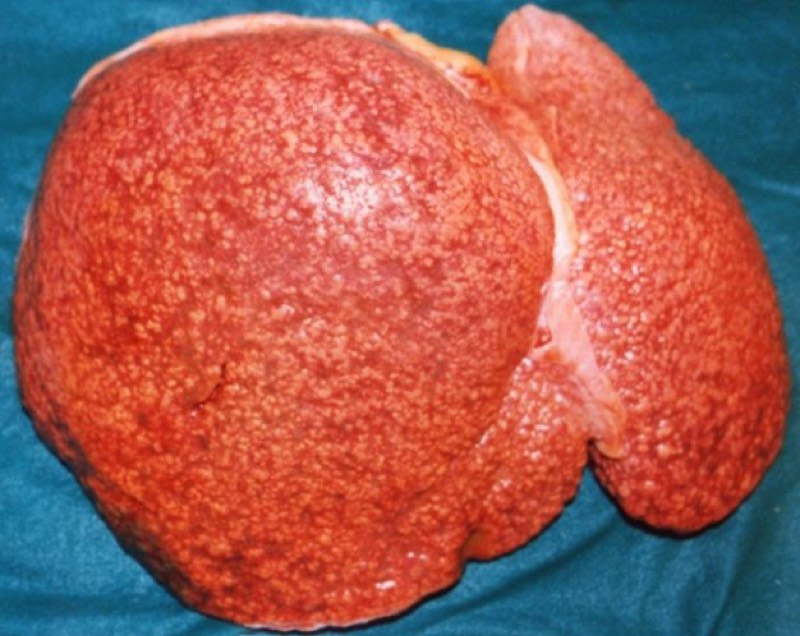
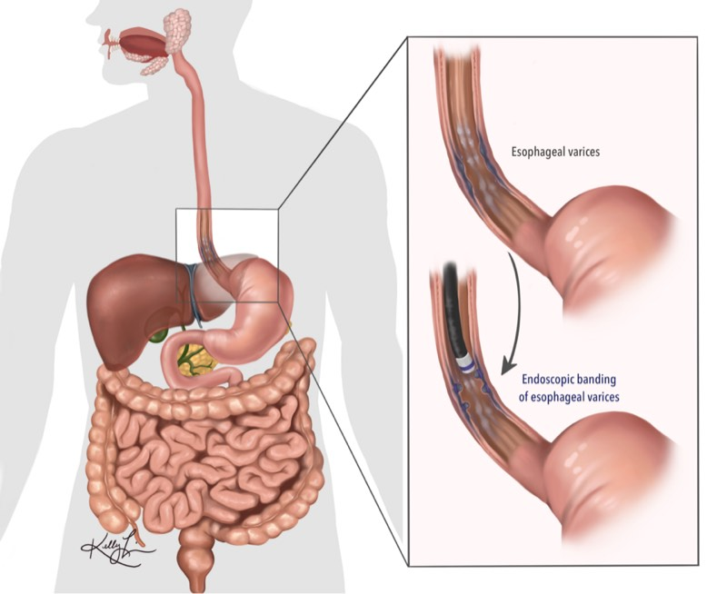
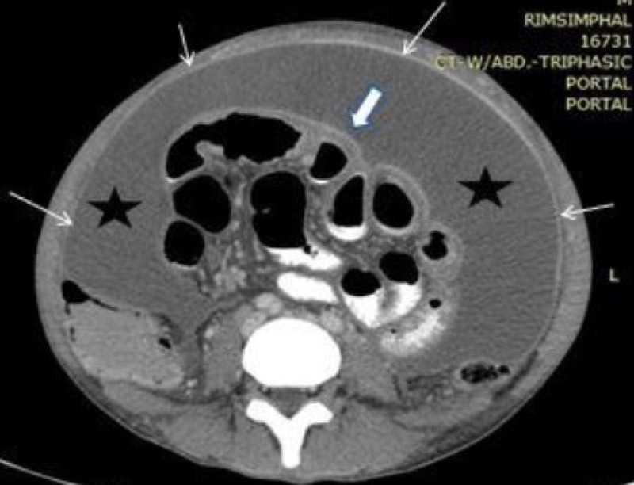

肝硬化與門脈高壓（含腹水、SBP、靜脈曲張、肝性腦病）
一句話定位：近五年 36 題裡有 31 題在二階（醫學三 20 題、醫學五 11 題）， 而且幾乎都是情境題問「下一步」。 這章的讀法不是背併發症清單，而是記住一條機轉主線， 所有處置都能從那條線推出來。
1. 定義與分類
- 肝硬化：慢性肝損傷造成瀰漫性纖維化＋再生結節，血管結構重塑。 「瀰漫」「結節」「血管重塑」三個字缺一不可 — 只有纖維化沒有結節叫肝纖維化，不叫肝硬化。
- 代償性 vs 失代償性：出現腹水、靜脈曲張出血、肝性腦病、黃疸任一項即為失代償。
- cACLD（代償性進展性慢性肝病）：Baveno VI 之後的用語，強調纖維化是連續光譜， 以非侵入性檢查（彈性造影）界定，不再非要切片。
- 門脈高壓依阻力位置分類（115-1 醫學五 Q11 直接考）：
| 位置 | 代表原因 |
|---|---|
| 竇前（presinusoidal） | 門靜脈栓塞、血吸蟲病、先天性肝纖維化、類肉瘤病、原發性膽汁性膽管炎早期、特發性非肝硬化門脈高壓 |
| 竇內（sinusoidal） | 肝硬化（最常見）、酒精性肝炎 |
| 竇後（postsinusoidal） | 肝竇阻塞症候群（SOS/VOD）、Budd-Chiari、右心衰竭、縮窄性心包炎 |
分類的臨床意義：竇前性門脈高壓的肝功能常正常， 所以會出現「有靜脈曲張但白蛋白與膽紅素正常」的題目。
2. 流行病學
- 台灣主因長期是 B 型與 C 型肝炎；C 肝在直接抗病毒藥物（DAA）普及後新發個案下降， MASLD／代謝相關脂肪肝與酒精的占比持續上升。
- 肝硬化與肝癌長年位居台灣主要死因之列，男性明顯多於女性。
- 失代償一旦發生，中位存活由代償期的十年以上驟降至約兩年 — 這是為何「代償 vs 失代償」 是考題最愛的分界。
3. 病理與病理生理｜為什麼一條機轉能解釋全部併發症
3.1 門脈壓為什麼上升：阻力 × 血流
門脈壓 ≈ 阻力 × 血流（Ohm 定律的類比）。兩邊都出問題：
阻力上升（肝內） - 結構性：纖維化、再生結節壓迫、竇狀隙微血管化（capillarization，內皮窗孔消失）。 - 動態性（可逆，約占三成）：活化的肝星狀細胞變成肌纖維母細胞而收縮； 肝內一氧化氮（NO）不足、內皮素-1 上升。
115-2 醫學三 Q17 問「肝細胞質量減少與血流改變主要因何種細胞活化」→ 肝星狀細胞。 靜止期的星狀細胞（Ito cell）儲存維生素 A，活化後失去脂滴、分泌 I 型膠原 — 這是一階組織學與二階病理的接點。
血流上升（內臟） - 內臟循環 NO 過量 → 血管擴張 → 門脈血流增加。
這是最漂亮的考點：同一個病人肝內 NO 不足、內臟 NO 過多。 記法：「肝裡缺 NO 所以塞、腸繫膜多 NO 所以灌」。
3.2 一條主線推出所有併發症
flowchart TD A[肝纖維化 + 星狀細胞收縮
肝內阻力上升] --> B[門脈壓上升 HVPG] B --> C[側支循環開啟] C --> C1[食道胃靜脈曲張 → 出血] C --> C2[氨繞過肝臟 → 肝性腦病] B --> D[內臟血管擴張
NO 等血管擴張物質] D --> E[有效動脈血容積下降] E --> F[RAAS 與交感神經活化
ADH 上升] F --> G1[鈉水滯留 → 腹水] F --> G2[稀釋性低血鈉] F --> G3[腎血管收縮 → 肝腎症候群] D --> H[肺內血管擴張 → 肝肺症候群] A --> I[肝細胞功能下降] I --> I1[白蛋白低 → 膠體滲透壓下降 助長腹水] I --> I2[凝血因子不足 → INR 上升] I --> I3[膽紅素上升 → 黃疸] I --> I4[免疫功能下降 + 腸道菌移位 → SBP]
背這張圖，勝過背二十條併發症。
3.3 幾個「為什麼」
- 為什麼腹水病人會低血鈉？ 不是缺鈉，是 ADH 使自由水滯留過多 → 稀釋性低鈉。 所以處置是限水而不是補鈉（113-1 醫學三 Q23 的方向）。
- 為什麼要用 spironolactone 而不是先用 furosemide？ 因為主要驅動是 RAAS 活化與續發性高醛固酮， 對抗醛固酮才是打在源頭；比例約 spironolactone 100 mg : furosemide 40 mg。
- 為什麼大量抽腹水要補白蛋白？ 抽液後有效循環容積再下降 → 循環功能失調 → 每抽 1 L 補約 6–8 g 白蛋白。
- 為什麼肝硬化容易感染？ 腸道通透性上升＋菌叢失衡（菌移位）＋網狀內皮系統清除力下降 ＋腹水中調理素不足。
- 為什麼靜脈曲張出血要給抗生素？ 出血當下菌移位風險最高，預防性抗生素能降低 再出血率與死亡率，這是少見的「抗生素改善存活」實證。
4. 一階基礎：組織學・解剖・生理
| 一階知識點 | 內容 | 二階怎麼用到 |
|---|---|---|
| 肝星狀細胞（Ito cell） | 位於 Disse 腔，儲存維生素 A | 活化後是纖維化與動態阻力的元凶 |
| Disse 腔與竇狀隙內皮窗孔 | 有窗孔、無基底膜，利於物質交換 | 微血管化後交換受阻，解釋合成功能下降 |
| 庫佛氏細胞 | 肝內巨噬細胞 | 清除腸道來源內毒素，功能下降 → 感染 |
| 門脈系統與體循環吻合處 | 食道下段、直腸、臍周、後腹膜 | 靜脈曲張、痔、海蛇頭的解剖基礎 |
| 尿素循環在肝細胞 | 氨 → 尿素 | 側支循環讓氨繞過 → 肝性腦病 |
| 白蛋白與膠體滲透壓 | 肝合成、半衰期約 20 天 | 腹水形成與白蛋白輸注的理由 |
| RAAS 生理 | 腎素—血管收縮素—醛固酮 | 解釋 spironolactone 為第一線 |
臍周靜脈曲張（caput medusae）走的是臍靜脈殘餘（round ligament）， 與痔靜脈叢（下段直腸走體循環）並列為經典解剖考點。
5. 臨床表現
- 代償期可完全無症狀，靠檢驗與影像發現。
- 肝功能不足：黃疸、蜘蛛痣、手掌紅斑、男性女乳、睪丸萎縮（雌激素代謝下降）、 凝血異常、指甲白甲症。
- 門脈高壓：脾腫大與血小板下降、腹水（shifting dullness、fluid wave）、海蛇頭、靜脈曲張。
- 撲翼樣震顫（asterixis）、肝臭（fetor hepaticus）。
- 血小板低是最早出現的線索之一（脾臟隔離＋TPO 生成下降）。
6. 實驗室檢查
| 檢查 | 意義 | 陷阱 |
|---|---|---|
| 白蛋白↓、INR↑、膽紅素↑ | 合成與排泄功能 | INR 上升不等於不會血栓，肝硬化是「再平衡凝血」 |
| 血小板↓ | 門脈高壓間接指標 | <150 K 合併脾腫大高度懷疑 |
| AST/ALT | 損傷程度 | 肝硬化末期可能反而正常 |
| AST/ALT >2 | 酒精性肝病 | 需搭配 GGT 與病史 |
| 血氨 | 肝性腦病輔助 | 不能用來診斷或追蹤，與嚴重度相關性差 |
| 腹水 PMN ≥250/mm³ | SBP 診斷 | 培養陰性也算（culture-negative neutrocytic ascites） |
| SAAG | ≥1.1 → 門脈高壓性 | 比舊的滲出／漏出液分類準確 |
| 腹水總蛋白 | 肝硬化通常 <2.5 | ≥2.5 且 SAAG ≥1.1 → 想心因性（114-2 醫學三 Q22、112-1 醫學二 Q81 的方向） |
| 非侵入性纖維化 | 彈性造影 LSM、FIB-4 | Baveno VII 的 rule of five |
7. 影像與內視鏡
- 超音波：肝表面結節狀、肝右葉萎縮／尾葉肥大、脾腫大、門靜脈變寬、側支循環、腹水。
- 都卜勒：門靜脈血流反向（hepatofugal）為進展指標。
- 內視鏡：靜脈曲張分級與紅色徵象（red wale marks）→ 決定是否預防性治療。
- HVPG（肝靜脈壓力梯度）是黃金標準：
| HVPG | 意義 |
|---|---|
| 1–5 mmHg | 正常 |
| >5 | 門脈高壓 |
| ≥10 | 臨床顯著門脈高壓（CSPH），開始出現靜脈曲張與失代償風險 |
| ≥12 | 靜脈曲張出血風險門檻 |
| ≥16–20 | 出血難控制、死亡率高 |
Baveno VII 的 rule of five：LSM ≤15 kPa 加血小板 ≥150 K 可排除 CSPH； LSM ≥25 kPa 可確立 CSPH，不需再測 HVPG。
8. 鑑別診斷
| 鑑別對象 | 關鍵區分點 | 一句話決斷 |
|---|---|---|
| 心因性腹水 | SAAG ≥1.1 但腹水總蛋白 ≥2.5、頸靜脈怒張、BNP 高 | 蛋白高的門脈高壓腹水 → 看心臟 |
| 腹膜癌症轉移 | SAAG <1.1、細胞學陽性 | 低 SAAG 先想腫瘤與結核 |
| 腹膜結核 | SAAG <1.1、腺苷去胺酶(ADA)升高、淋巴球為主 | 慢性發燒＋淋巴球腹水 |
| 續發性腹膜炎 | 多菌種、葡萄糖<50、LDH>血清 | 見比較表 10 |
| 非肝硬化門脈高壓 | 肝功能正常但有靜脈曲張 | 想血吸蟲、門靜脈栓塞 |
9. 分級／評分系統
| 系統 | 用途 | 適用族群 | 限制 | 國考陷阱 | 決策連結 |
|---|---|---|---|---|---|
| Child-Pugh | 肝功能儲備 | 肝硬化 | 主觀項目、無腎功能、天花板效應 | 不含 creatinine、不含轉胺酶（114-1 醫學三 Q22、醫學五 Q34 連兩年考） | 手術風險、藥物選擇 |
| MELD/MELD-Na/3.0 | 三個月死亡率、移植排序 | 末期肝病 | 不含腹水與腦病 | 誤以為含腹水 | MELD ≥15 移植有存活利益 |
| HVPG | 門脈壓客觀量測 | 竇內性為主 | 侵入性；竇前性測不準 | 誤以為所有門脈高壓都測得出 | ≥10 CSPH、≥12 出血風險 |
| West Haven | 肝性腦病分級 | — | 主觀 | Grade IV 無 asterixis | 決定住院與氣道保護 |
| Baveno VII 準則 | 非侵入性判定 CSPH | cACLD | 需可靠的彈性造影 | 把 rule of five 記反 | 決定是否需內視鏡篩檢 |
詳細五欄比較見
content/scoring-systems.md。
10. 診斷與處置流程
flowchart TD
A[疑似肝硬化] --> B[抽血 + 超音波 + 非侵入性纖維化]
B --> C{是否 cACLD}
C -->|LSM ≥15 kPa 或影像典型| D[確立 進入併發症評估]
C -->|LSM ≤15 且 PLT ≥150K| E[排除 CSPH 可暫免內視鏡]
D --> F[內視鏡篩檢靜脈曲張]
F --> G{有無中大型曲張或紅色徵象}
G -->|有| H[NSBB（carvedilol 優先）或結紮]
G -->|無| I[定期追蹤]
D --> J[有無腹水]
J -->|有| K[診斷性腹腔穿刺
SAAG + PMN + 培養]
K --> L{PMN ≥250}
L -->|是| M[診斷 SBP
第三代 cephalosporin + 白蛋白]
L -->|否| N[限鈉 + spironolactone ± furosemide]
D --> O[有無意識改變]
O -->|有| P[找誘因：感染 出血 電解質 藥物 便秘
lactulose ± rifaximin]
11. 治療策略
11.1 腹水
- 限鈉（約 2 g 鈉／日）；不常規限水，除非血鈉 <125 mEq/L。
- 利尿劑：spironolactone 為主，必要時加 furosemide（100:40 比例遞增）。
- 大量腹水穿刺（LVP）＋白蛋白（每抽 1 L 補 6–8 g）。
- 難治性腹水：反覆 LVP、TIPS（注意會惡化肝性腦病）、移植評估。
- 避免 NSAID（抑制前列腺素 → 腎灌流下降）與 ACEI/ARB（降血壓惡化循環）。
11.2 自發性細菌性腹膜炎（SBP）
- 診斷：腹水 PMN ≥250/mm³；床邊直接注入血液培養瓶提高陽性率； 典型為單一革蘭氏陰性菌（E. coli、Klebsiella）。
- 治療：第三代 cephalosporin（如 cefotaxime）5–7 天。
- 白蛋白：Cr >1 mg/dL、BUN >30 或膽紅素 >4 時，第 1 天 1.5 g/kg、第 3 天 1 g/kg — 可降低肝腎症候群與死亡率。
- 次級預防：曾發生 SBP 者長期口服 norfloxacin 或 co-trimoxazole。
- 初級預防：腹水總蛋白低＋進展期肝病、或消化道出血當下（ceftriaxone 7 天）。
111-1 醫學三 Q61 考的正是「初次、未曾使用抗生素的腹膜炎，其致病原與治療」→ 單一腸道革蘭氏陰性菌、第三代 cephalosporin。
11.3 靜脈曲張
| 情境 | 處置 |
|---|---|
| 初級預防（未出血過） | 非選擇性 β 阻斷劑（Baveno VII 優先 carvedilol） 或內視鏡結紮 |
| 急性出血 | ①血管收縮劑（terlipressin／octreotide）②預防性抗生素（ceftriaxone）③12 小時內內視鏡結紮 ④限制性輸血（Hb 目標約 7–8 g/dL） |
| 高風險者 | 早期（pre-emptive）TIPS 於 72 小時內 |
| 失敗時 | 氣囊填塞或可取出式食道支架作為橋接 |
| 次級預防 | NSBB ＋ 反覆結紮 |
| 胃靜脈曲張 GOV2／IGV1 | cyanoacrylate 組織膠注射，不是結紮 |
陷阱：輸血輸太多會使門脈壓回升而再出血 → 限制性輸血策略。 114-2 醫學五 Q32、113-2 醫學三 Q22、112-2 醫學三 Q20 都在這一區出題。
11.4 肝性腦病
- 找誘因：感染、消化道出血、電解質異常（低血鉀、鹼中毒）、便秘、脫水、鎮靜劑、TIPS 後。
- Lactulose：酸化腸道、把 NH₃ 轉成不吸收的 NH₄⁺，目標每天 2–3 次軟便。
- Rifaximin：減少復發，常與 lactulose 併用。
- 不要限制蛋白質：舊觀念已被推翻，肌少症會惡化腦病；建議每日 1.2–1.5 g/kg 蛋白質， 可用植物性與乳製品來源。115-2 醫學三 Q18 考的就是這個更新。
- 反覆發作且藥物無效者評估移植；TIPS 後嚴重腦病可考慮縮小分流。
11.5 肝腎症候群（HRS-AKI）
- 診斷需排除低血容量、腎毒性藥物、休克、結構性腎病；停利尿劑並以白蛋白擴容 2 天無效。
- 治療：terlipressin ＋ 白蛋白（或 norepinephrine），根治仍是肝移植。
11.6 移植
- 適應症：失代償性肝硬化、符合米蘭準則的 HCC、急性肝衰竭、代謝性肝病。
- 禁忌：控制不良的肝外惡性腫瘤、嚴重心肺共病、無法控制的敗血症、持續物質濫用等 （111-2 醫學三 Q23、114-2 醫學五 Q3 就是問這個）。
12. 預後
- 代償期中位存活 >12 年；出現腹水後約 2 年；SBP 一年死亡率仍高。
- 預後不良指標：難治性腹水、低血鈉、HRS、反覆腦病、MELD 上升。
- 移除病因會逆轉：C 肝根治、B 肝抑制、戒酒、減重都能讓部分纖維化回退 — 「肝硬化不可逆」這句老話已不完全正確，是新舊觀念的考點。
13. 一階 ↔︎ 二階橋樑
| 一階考點 | 機轉 | 二階對應 | 臨床決策 |
|---|---|---|---|
| 星狀細胞儲存維生素 A、活化後分泌膠原 | 纖維化與動態阻力 | 肝硬化病理特徵題 | 抗纖維化與病因移除 |
| 竇狀隙內皮窗孔 | 微血管化 → 交換障礙 | 合成功能下降 | 白蛋白與凝血異常判讀 |
| 門—體循環吻合部位 | 側支開啟 | 食道靜脈曲張、痔、海蛇頭 | 內視鏡篩檢與結紮 |
| RAAS 與醛固酮生理 | 鈉水滯留 | 腹水形成 | spironolactone 為第一線 |
| ADH 與自由水 | 稀釋性低血鈉 | 低血鈉處置 | 限水而非補鈉 |
| 尿素循環在肝 | 氨無法代謝 | 肝性腦病 | lactulose、rifaximin、不限蛋白 |
| 前列腺素維持腎灌流 | NSAID 阻斷 | 腎功能惡化 | 肝硬化避免 NSAID |
| NO 的血管作用 | 肝內不足、內臟過多 | 門脈高壓雙重機轉 | NSBB 降心輸出與內臟血流 |
14. 高頻考點與陷阱
- 考點：Child-Pugh 五項；MELD 三項；兩者差別。
- 考點：SBP 的 PMN 切點與白蛋白使用時機。
- 考點：急性靜脈曲張出血必給抗生素。
- 考點：肝性腦病不限制蛋白質。
- 陷阱：血氨正常不能排除肝性腦病，血氨高也不必然是腦病。
- 陷阱：低血鈉補鈉（錯，要限水）。
- 陷阱：TIPS 解決腹水但惡化腦病。
- 陷阱：竇前性門脈高壓肝功能可正常。
- 誘答設計：把 creatinine 或 AST 放進 Child-Pugh 選項；把「限制蛋白質」寫成正確處置。
15. 口訣與記憶法
- Child-Pugh 五項：「膽白凝、水腦」→ 膽紅素、白蛋白、凝血（INR）、腹水、腦病。
- MELD 三項：「膽凝腎」→ 膽紅素、INR、creatinine。
- 一句話主線：「肝硬 → 門脈高 → 內臟擴 → 血量虛 → 腎鈉留」。
- NO 雙面：「肝內缺 NO 塞、腸繫多 NO 灌」。
- 急性靜脈曲張出血四件事：「縮、抗、綁、少輸」→ 血管收縮劑、抗生素、結紮、限制性輸血。
- SBP 白蛋白時機：「腎氮膽」→ Cr>1、BUN>30、bilirubin>4。
16. 2024–2026 值得關注的新研究與新療法
| 主題 | 內容 | 對考試的意義 |
|---|---|---|
| Baveno VII 落地 | 以非侵入性檢查（LSM＋血小板）取代部分內視鏡篩檢；carvedilol 成為優先 NSBB | 「誰需要做內視鏡」的答案已改變 |
| 代償期預防失代償 | NSBB 用於 CSPH 者可降低失代償（PREDESCI 概念延伸） | NSBB 的適應症由「防出血」擴大到「防失代償」 |
| Terlipressin 於 HRS | 美國 2022 年核准；需注意呼吸衰竭風險與病人篩選 | HRS 首選藥物的定位 |
| 長期白蛋白治療 | ANSWER 等研究支持部分族群長期輸注，但各國指引採用程度不一 | 屬「有爭議」題材，考題多問機轉而非常規 |
| MASLD／MetALD 新命名 | 2023 年更名，強調代謝與酒精共存的族群 | 115-2 醫學三 Q57 已直接考命名 |
| 纖維化可逆 | 病因移除後纖維化回退的證據累積 | 「肝硬化一定不可逆」成為錯誤敘述 |
| 人工智慧輔助內視鏡與影像 | 靜脈曲張與腹水偵測輔助 | 目前少入題，但屬趨勢題材 |
17. 心智圖
mindmap
root((肝硬化與門脈高壓))
機轉主線
肝內阻力上升
纖維化結節
星狀細胞收縮
肝內NO不足
內臟血流增加
內臟NO過多
有效循環容積下降
RAAS活化
ADH上升
併發症
腹水
限鈉
spironolactone優先
LVP補白蛋白
SBP
PMN250
單一菌種
白蛋白時機
靜脈曲張
NSBB carvedilol
急性出血四件事
GOV2用組織膠
肝性腦病
找誘因
lactulose rifaximin
不限蛋白
肝腎症候群
terlipressin加白蛋白
根治靠移植
評估
ChildPugh膽白凝水腦
MELD膽凝腎
HVPG十為CSPH
Baveno rule of five
18. 歷屆考題對照（111-1 ～ 115-2）
| 年度 | 階段/科目 | 題號 | 考點核心 | 答案方向 |
|---|---|---|---|---|
| 111-1 | 二階 醫學三 | 61 | 初發 SBP 的致病原與抗生素 | 單一腸道革蘭氏陰性菌、第三代 cephalosporin |
| 111-2 | 二階 醫學三 | 23 | 何種情況不適合肝移植 | 肝外惡性腫瘤／無法控制的感染等 |
| 112-1 | 一階 醫學二 | 81 | 何種腹水蛋白濃度最高 | 非門脈高壓性（如腫瘤、結核）或心因性 |
| 112-1 | 二階 醫學三 | 18 | 黃疸＋腹脹＋反彈痛 | 腹膜炎的判斷與處置 |
| 112-2 | 二階 醫學三 | 20 | 食道靜脈瘤出血處置何者錯誤 | 輸血過度、延遲抗生素等為錯誤 |
| 113-1 | 二階 醫學三 | 23 | 腹水＋低血鈉＋低白蛋白的處置 | 限水與利尿劑策略 |
| 113-2 | 二階 醫學三 | 22 | 胃食道靜脈曲張處理 | NSBB／結紮／組織膠的適應症 |
| 114-1 | 二階 醫學三 | 22 | Child-Turcotte-Pugh 未包含何者 | creatinine（或轉胺酶） |
| 114-1 | 二階 醫學五 | 31 | 門靜脈高壓敘述何者錯誤 | 機轉與分類的細節 |
| 114-1 | 二階 醫學五 | 34 | Child-Pugh 不是評估項目者 | 同上 |
| 114-2 | 二階 醫學三 | 22 | 何種腹水數值最像肝硬化 | 高 SAAG、低總蛋白 |
| 114-2 | 二階 醫學五 | 3 | 何者不是肝移植適應症 | 禁忌症判斷 |
| 114-2 | 二階 醫學五 | 32 | 食道靜脈曲張出血處置何者錯誤 | 見治療表 |
| 115-1 | 二階 醫學五 | 11 | 何者屬竇前性門脈高壓 | 血吸蟲、門靜脈栓塞等 |
| 115-2 | 二階 醫學三 | 17 | 肝硬化血流改變因何種細胞活化 | 肝星狀細胞 |
| 115-2 | 二階 醫學三 | 18 | 肝性腦病治療何者正確 | 不限蛋白質、lactulose 與 rifaximin |
19. 影像資源（標準圖片來源）
| 影像 | 建議來源 | 連結 | 授權 |
|---|---|---|---|
| 肝硬化超音波表面結節 | Radiopaedia — Liver cirrhosis | https://radiopaedia.org/articles/liver-cirrhosis | CC BY-NC-SA 3.0 |
| 側支循環與臍靜脈再通 | Radiopaedia — Portal hypertension | https://radiopaedia.org/articles/portal-hypertension | CC BY-NC-SA 3.0 |
| 食道靜脈曲張內視鏡分級 | WGO / Atlas of Gastrointestinal Endoscopy | https://www.worldgastroenterology.org | 依站方規定 |
| 腹水影像與穿刺定位 | StatPearls — Ascites | https://www.ncbi.nlm.nih.gov/books/NBK470482/ | CC BY-NC-ND |
| 肝星狀細胞組織圖 | Histology 教學資源／自繪示意圖 | — | 自製 |
20. 自我測驗
測驗題原始碼
Q: 58 歲肝硬化男性因腹脹入院，腹水檢查：多形核白血球 380/mm³、總蛋白 1.2 g/dL、SAAG 1.6 g/dL，培養為單一 E. coli。血清 creatinine 1.4 mg/dL。除抗生素外，下列處置何者最能降低死亡率？ A) 立即大量腹水引流 B) 給予白蛋白 1.5 g/kg 於第 1 天、1 g/kg 於第 3 天 C) 立即開始利尿劑加倍劑量 D) 安排緊急剖腹探查 ans: B why: 這是 SBP（PMN ≥250、單一菌種、高 SAAG）。在 Cr>1、BUN>30 或膽紅素>4 時給白蛋白可降低肝腎症候群與死亡率。續發性腹膜炎才需要手術，且會呈多菌種、低葡萄糖與高 LDH。 Q: 關於肝硬化門脈高壓的機轉，下列敘述何者正確？ A) 肝內與內臟循環的一氧化氮皆減少 B) 肝內一氧化氮不足使阻力上升，內臟循環一氧化氮過多使血流增加 C) 門脈壓上升完全來自纖維化造成的固定阻力，無可逆成分 D) 肝星狀細胞活化後主要功能是清除內毒素 ans: B why: 這是本章最核心的雙重機轉。肝內 NO 不足與星狀細胞收縮造成動態阻力（約三成可逆），內臟 NO 過多造成血管擴張與血流增加。清除內毒素是庫佛氏細胞的工作。 Q: 65 歲肝硬化病人出現意識混亂與撲翼樣震顫。下列處置何者最不適當？ A) 尋找感染、消化道出血、電解質異常等誘因 B) 給予 lactulose 使每日排軟便 2–3 次 C) 嚴格限制蛋白質攝取至每日 0.5 g/kg 以下 D) 反覆發作者加用 rifaximin ans: C why: 限制蛋白質是已被推翻的舊觀念，會加重肌少症並惡化預後。目前建議每日 1.2–1.5 g/kg 蛋白質，優先植物性與乳製品來源。 Q: 下列何者屬於竇前性（presinusoidal）門脈高壓的原因？ A) 酒精性肝硬化 B) 血吸蟲病 C) Budd-Chiari 症候群 D) 縮窄性心包炎 ans: B why: 血吸蟲蟲卵沉積於門脈小分支造成竇前性阻塞，特徵是肝功能常保持正常。酒精性肝硬化為竇內性，Budd-Chiari 與縮窄性心包炎為竇後性。 Q: 肝硬化併難治性腹水病人接受 TIPS 後，最需要監測的併發症為何？ A) 自發性細菌性腹膜炎 B) 肝性腦病惡化 C) 食道靜脈曲張出血增加 D) 低血鉀 ans: B why: TIPS 建立門體分流後，腸道來源的氨大量繞過肝臟直接進入體循環，肝性腦病是最典型的併發症；同時因降低門脈壓，靜脈曲張出血反而減少。
21. Anki 卡片
Anki 卡片原始碼
肝硬化的三個必要病理特徵？ 瀰漫性纖維化、再生結節、血管結構重塑（缺一不可） 肝硬化 門脈高壓的雙重機轉是什麼？ 肝內阻力上升（纖維化＋星狀細胞收縮＋肝內 NO 不足）與內臟血流增加（內臟 NO 過多造成血管擴張） 肝硬化 肝星狀細胞靜止期與活化後的差別？ 靜止期在 Disse 腔儲存維生素 A；活化後轉為肌纖維母細胞，分泌 I 型膠原並收縮 一階基礎 HVPG 各切點的意義？ 1-5 正常；>5 門脈高壓；≥10 臨床顯著門脈高壓 CSPH；≥12 靜脈曲張出血風險 肝硬化 Baveno VII 的 rule of five 怎麼用？ LSM ≤15 kPa 且血小板 ≥150 K 可排除 CSPH；LSM ≥25 kPa 可確立 CSPH 肝硬化 肝硬化低血鈉的機轉與處置？ ADH 上升造成稀釋性低血鈉；處置是限水而非補鈉（血鈉<125 時限水） 肝硬化 為什麼腹水首選 spironolactone？ 主要驅動是 RAAS 活化與續發性高醛固酮，對抗醛固酮才是打在源頭 肝硬化 大量腹水穿刺後補白蛋白的劑量？ 每抽 1 公升補 6–8 公克白蛋白 肝硬化 SBP 的診斷標準與典型菌種？ 腹水多形核白血球 ≥250/mm³；典型為單一革蘭氏陰性菌如 E. coli、Klebsiella 肝硬化 SBP 何時該加白蛋白？劑量？ Cr>1、BUN>30 或膽紅素>4 時；第 1 天 1.5 g/kg、第 3 天 1 g/kg 肝硬化 急性靜脈曲張出血的四大處置？ 血管收縮劑（terlipressin/octreotide）、預防性抗生素（ceftriaxone）、12 小時內內視鏡結紮、限制性輸血（Hb 約 7-8） 肝硬化 為什麼靜脈曲張出血要給抗生素？ 出血時腸道菌移位風險最高，預防性抗生素可降低再出血率與死亡率 肝硬化 胃靜脈曲張 GOV2／IGV1 的首選治療？ Cyanoacrylate 組織膠注射，而非橡皮圈結紮 肝硬化 肝性腦病是否要限制蛋白質？ 不要。舊觀念已推翻，建議每日 1.2–1.5 g/kg，優先植物性與乳製品蛋白 肝硬化 血氨在肝性腦病的角色？ 輔助參考，不能用於診斷或追蹤療效，與嚴重度相關性差 肝硬化 TIPS 最典型的併發症？ 肝性腦病惡化（氨繞過肝臟直接進入體循環） 肝硬化 肝腎症候群的治療？ 白蛋白加 terlipressin（或 norepinephrine）；根治仍需肝移植 肝硬化 竇前性門脈高壓的代表原因與特徵？ 血吸蟲病、門靜脈栓塞、先天性肝纖維化；特徵是肝功能常正常 肝硬化 為什麼肝硬化病人要避免 NSAID？ 抑制前列腺素造成腎灌流下降，易誘發腎功能惡化與肝腎症候群 肝硬化 肝硬化最早出現的實驗室線索之一？ 血小板下降（脾臟隔離加上血小板生成素減少） 肝硬化
22. 參考資料
- de Franchis R, et al. Baveno VII — Renewing consensus in portal hypertension. J Hepatol 2022.
- AASLD Practice Guidance: Portal Hypertensive Bleeding in Cirrhosis（2024 版）。
- AASLD Practice Guidance: Diagnosis, Evaluation, and Management of Ascites, SBP, and HRS（2021）。
- EASL Clinical Practice Guidelines for decompensated cirrhosis（2018）。
- AASLD/EASL Hepatic Encephalopathy Practice Guideline。
- Rinella ME, et al. 多學會脂肪肝新命名共識（MASLD／MetALD, 2023）。
- 考選部，111-1～115-2 醫師分階段考試試題與答案（公開資料）。
畫布覆寫（pipeline/build_canvas.py 用，不影響閱讀）
抽取器用關鍵字猜決策帶，這幾格猜錯了，在這裡釘回去。 節點 id 可在互動畫布點節點後於右側抽屜看到，或查 canvas/<章節id>.json。
決策畫布覆寫指令
# SBP 的 PMN ≥250 是「確診切點」，不是處置 !m10_L -> confirm # 「診斷 SBP + 第三代 cephalosporin + 白蛋白」的重心在處置 !m10_M -> treat/flow/tx # 限鈉與利尿劑是治療，不是檢查 !m10_N -> treat/flow/tx
圖譜
以下圖片來自 Wikimedia Commons，授權為 CC0／PD／CC BY／CC BY-SA，已逐張人工確認內容與說明相符。




